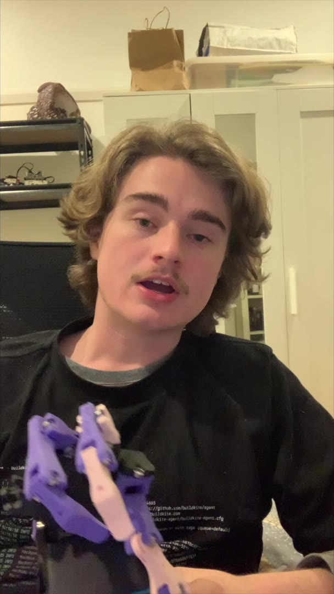
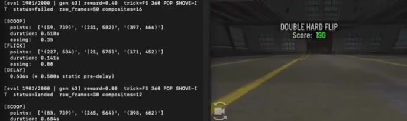
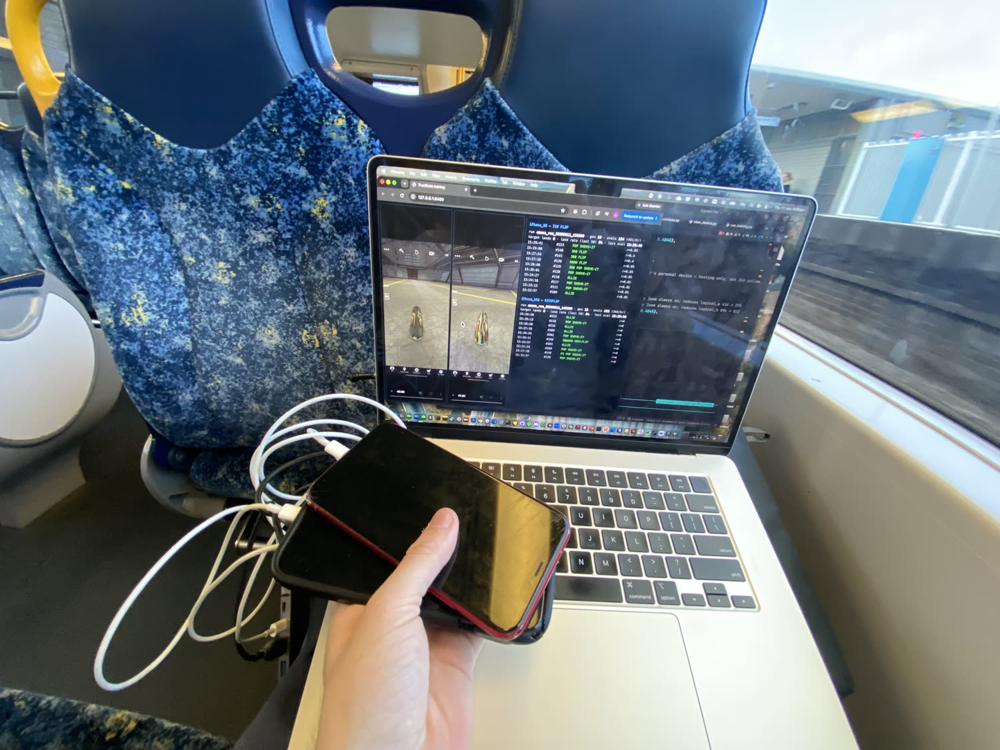
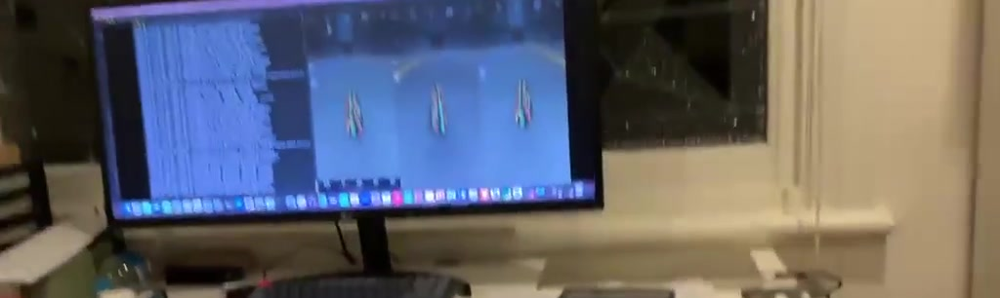
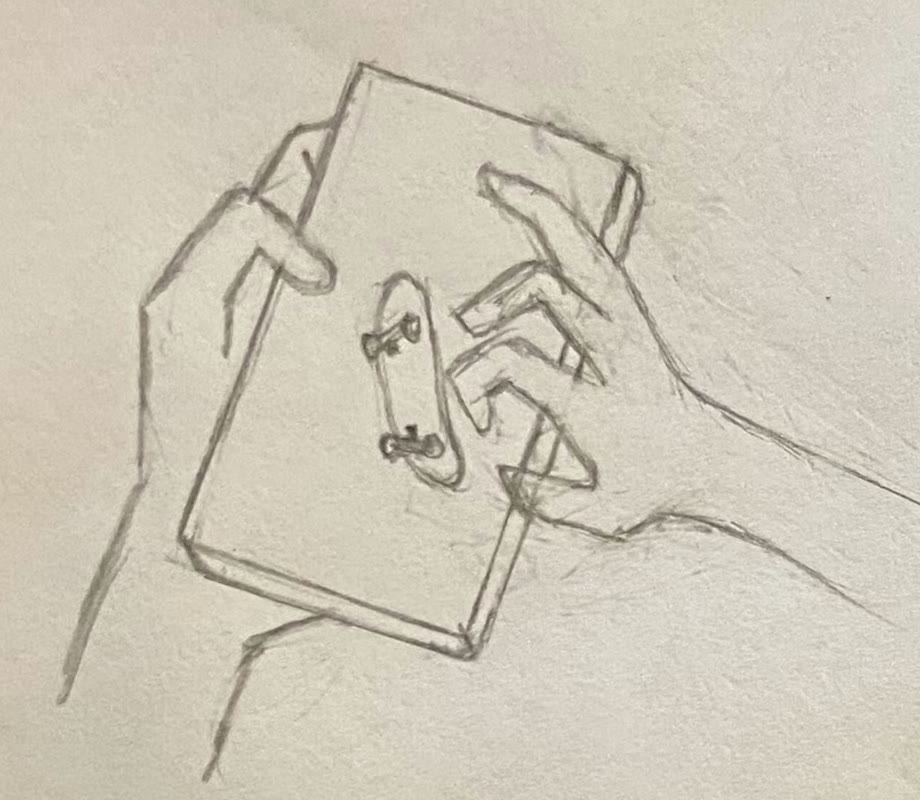
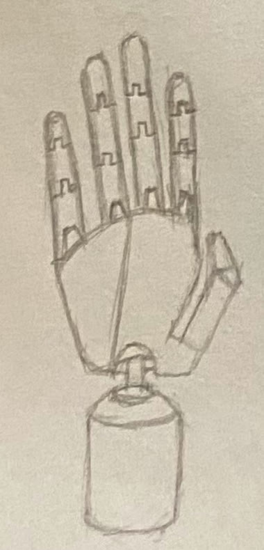

trueskate-ai — learning to skate from pixels
A personal research project on learning fine motor control from vision alone: an agent playing True Skate on unmodified physical iPhones, seeing only screen frames and acting only through touch.
01WHAT IT IS
I’m teaching an agent to play True Skate on unmodified physical iPhones. It sees only screen frames and acts only through touch — no simulator, no access to the game’s code, no reward injected into the process.
That framing is the hard way, on purpose. The controls are continuous, the feedback is delayed, and the game reports a trick’s name on screen but nothing else.
My conjecture: I can’t assimilate the whole internet in a lifetime, and I can’t train a frontier model on consumer hardware — but I did master True Skate well within one. So it may be possible to train an agent to play it on consumer-grade hardware too.
The endgame actuator is a tendon-driven robotic hand tapping and swiping real glass, not a script poking an API — section 04 covers it.
02DEMO
Three views of the same project: a pitch recording made for an audience, a still from an unedited rollout, and two candid photos from the field.




03HOW IT WORKS
Five stages. Everything between capture and touch is replaceable; the only interface between stages is a frame buffer and a stream of touch events. The system started on CMA-ES — an evolutionary optimizer rewarded by the trick name read off-screen by Apple Vision OCR, which is what landed the 360 flips in section 05 — and is now built around two-stage behavioral cloning: it learns gestures from expert play instead of searching for them.

An earlier CMA-ES baseline and a collapsed PPO + HER attempt taught me what this noisy real-time setting could and couldn’t give back.
04THE HAND
Almost every robotic hand is built to grip. This one needs the opposite — speed and human-like motion under no load. I’m folding the best-suited features of three open-source hands — ORCA, HRI, Ruka-v2 — into my own.
Each finger gets a tendon-driven curl plus base splay, roughly two to three degrees of freedom, with capacitive fingertips gated electronically so every tap registers. The first build is a two-finger scaffold (index + middle) to prove the module and the control loop before scaling to five.



05UNDER THE HOOD
The numbers below are from a single CMA-ES run against the 360 flip — the one flatground trick that’s currently landing reliably, out of the 36 in the target set. Everything is real time on physical hardware; nothing here runs faster than a person would see it.
- clean 360-flip landings
- ~1,280 / one run, not an average
- iPhones in parallel
- 3 / real hardware, no simulator
- time per evaluation
- ~3.5s / real time, no sim speedup
- flatground tricks
- 36 / target set; 1 landed reliably
- DOF per finger
- ~2–3 / in design, nothing built
06ROADMAP
Two tracks, neither committed to a date. This is intent, not a schedule.
Track A · the agent (software):
Track B · the hand (hardware):
07STATUS
Next is closing the loop on the two-finger module and getting a second trick family running under behavioral cloning.
true skate is a game by true axis, available on the app store — trueskate-ai is an independent research project and is not affiliated with or endorsed by true axis.